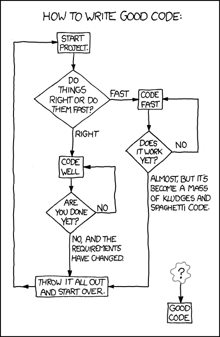
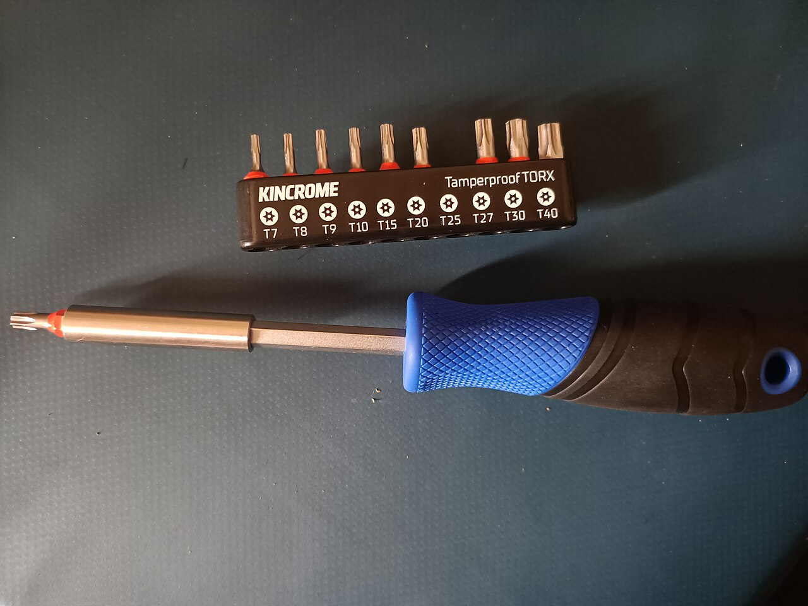
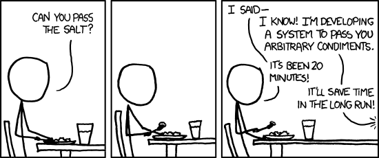

Designing Object-Oriented Programs
Use SOLID and GRASP as questions about a concrete program: who owns the data, who makes decisions, which changes should stay local, and what callers may reasonably expect from a replacement.
The lecture, then the practice
Choose a section, or use the arrow keys in the section list. Hover or tap an underlined part of a program for its explanation. Run it, then use Edit to test a prediction of your own.
01Responsibility and information experts
1.1A coherent reason to change
The first design question is not “which classes?” but “who is responsible for what?” A responsibility is something a class knows or does. An order knows its lines. A receipt formatter knows how a receipt should look. A file writer knows how to put text on a disk.
The single responsibility principle (the S in SOLID) says a class should have one coherent responsibility. Robert C. Martin, who gave it that name, puts it as one reason to change. That gives you a test you can actually run: imagine the next three change requests. “Prices now include tax.” “The receipt needs the shop’s address.” “Save it as JSON as well.” If all three land in the same class, it has three reasons to change, and every edit for one job risks breaking the other two.
The ReportJob at the end of today’s revision was exactly this: one method counted the passes, chose the format and opened the file. A change to the pass mark and a change to the file format both meant editing the same lines.
It does not mean one method per class. A model may need constructors, queries and updates that all preserve the same rules. An Order with add, total and lineCount is still one responsibility: every method serves the same data and the same rules.
Some students hear “single responsibility” and split every method into its own class: OrderAdder, OrderTotaller, OrderCounter. Now one idea is scattered over three files and each class reaches into the others’ data. Group code by reason to change, not by size.
1.2Put a calculation beside its information
Once you know the responsibilities, which class gets each one? GRASP (General Responsibility Assignment Software Patterns, from Craig Larman’s textbook Applying UML and Patterns) gives the first answer: Information Expert. Give a job to the class that already has the information needed to do it.
Work it through for the order. Who can compute a line’s subtotal? The line: it holds the price and the quantity. Who can compute the total? The order: it holds the lines. So Line.subtotal() and Order.total(), and the order asks each line instead of reaching inside its fields or repeating the subtotal rule.
The same idea is often said as tell, don’t ask: tell an object what you want done, rather than asking for its data and doing the work yourself. If a caller writes line.getCents() * line.getQuantity(), the subtotal rule now lives in that caller, and in every other caller that needed a subtotal.
Making every field private and then adding a getter and a setter for each one is not encapsulation. The data still flows out and the rules get written by whoever uses it. Before adding a getter, ask: should the caller be asking this object to do the job instead?
Line has its price and quantity, so it computes its subtotal; an Order has its lines, so it adds them up. Photo: EVERYMAN FILMS LTD (EVERYMAN FILMS LTD) from EVERYMAN FILMS LTD , EVERYMAN FILMS LTD, 2013 · CC01.3Finding the classes: nouns, verbs and CRC cards
Where do classes come from in the first place? A classic first move is to read the problem description and mark its words. Nouns suggest classes, or the data they hold; verbs suggest methods. The first interactive diagram below does exactly this.
| Words in the description | Often becomes | Example |
|---|---|---|
| “a customer places an order” | a class | Order |
| “each line has a price and a quantity” | fields of another class | Line.cents, Line.quantity |
| “the shop works out the total” | a method, on the class that has the data | Order.total() |
| “students get a discount, staff get another” | something that varies: an interface or a function | PriceRule |
It is a starting point, not an algorithm. Some nouns are just values (a price is an int, not a class). Some useful classes, like a receipt formatter, never appear as a noun at all; GRASP calls an invented helper like that a Pure Fabrication.
In 1989 Kent Beck and Ward Cunningham described a cheap way to try a design before writing any code: CRC cards (Class, Responsibilities, Collaborators). One index card per class: its name at the top, what it knows and does on the left, the classes it works with on the right. If a card overflows, the class has too many jobs. If nobody’s card holds a piece of data, nobody owns it yet.
| Order | Collaborators |
|---|---|
| knows its lines adds a line works out the total | Line |
Naming is a design tool. If the only honest name for a class is OrderManager or ReceiptAndFileHelper, it probably has more than one job.
1.4Creator: who should make the object?
When a new Line is needed, which class should call new Line(...)? GRASP’s Creator suggests: class B should create objects of class A if B contains A, closely uses A, or has the data to initialise A.
An order contains its lines, so order.addLine(300, 2) can create the Line itself. The caller no longer needs to know that Line exists at all, and you could change how lines are stored without touching any caller. Compare the first example below, where main builds each line, with the extra example The order creates its own lines. Both print 750; they differ in who knows what.
Java and Python, side by side. Both languages let an object guard its own data, but they enforce it differently.
| Idea | Java | Python |
|---|---|---|
| hide a field | private int cents; — the compiler refuses outside access | self._cents — a convention only; nothing stops access |
| a field that never changes | private final int cents; | no keyword; just never assign it again |
| read-only access | a getter and no setter | a @property with no setter |
| behaviour that needs no object | a static method inside some class | a plain function in the module (often clearer) |
For each method you write, say out loud: “this class can do this because it has ___”. If the blank is another class’s field, the method probably belongs in that other class.
From a description to classes: who knows what?
A common first step in design is to read the problem description and mark its words. Nouns often suggest classes or the data they hold; verbs often suggest methods. Then give each job to the class that has the information for it: GRASP calls that class the Information Expert. Mark the words first, then hand out the jobs.
This interactive diagram needs JavaScript.
Follow the messages: who works out the total?
Each box is an object (or a function) and the strip shows the message being sent. Press Next and watch who asks and who answers. The highlighted line has just run; the call stack on the right shows which method is running now, with the newest call at the bottom.
This interactive diagram needs JavaScript.
Send in a change request: one class or two?
Both versions print the same thing today. The difference shows up when something has to change. Pick a version, then a change request: the edited lines are marked + and −, and the summary says which parts of the program had to be opened. The output is from a real run of the changed program.
This interactive diagram needs JavaScript.

- The line owns the price and quantity needed for its subtotal.
- The order asks each line for its contribution instead of exposing its fields.
- Keep domain calculation available independently of presentation.
- Changing receipt wording need not change the order calculation.
- The caller passes only price and quantity. It never writes
new Line, so it does not even need to know thatLineexists. - Information Expert: the line has the price and the quantity, so it works out its own subtotal.
- Creator: the order contains its lines, so the order is the natural place to create them.
- Only the order knows how lines are stored. Switching to a
LinkedListwould change no caller. - The order asks each line; it never multiplies a price by a quantity itself.
- The leading underscore says “internal: use the methods”. Python does not enforce it; it is a promise between programmers.
- The caller tells the account to withdraw. The rule “never go below zero” lives here, once.
- The account has the balance, so it makes the decision: Information Expert.
- Only 70 is left, so the account refuses and the balance is unchanged. Compare a caller that asks for the balance, checks it and subtracts: that check would be copied into every caller.
Change the receipt wording without changing total(). Then add a per-line quantity and decide which class should absorb that rule.
02Extension and dependency inversion
2.1Name the variation you actually need
Bertrand Meyer’s 1988 book Object-Oriented Software Construction gave the open–closed principle (the O in SOLID): software entities should be open for extension, but closed for modification. In plain words: you should be able to add a new case by adding new code, not by editing code that already works.
A Basket that depends on a PriceRule can accept another rule without editing its calculation. A half-price offer is a new HalfPrice class; Basket is not opened at all. Compare the version that chooses for itself:
int price(int cents) {
if (kind.equals("student")) return cents * 80 / 100;
if (kind.equals("half")) return cents / 2; // edit Basket again
return cents;
}Every new offer means another if inside a class that was already tested.
The abstraction earns its place when there are real alternatives. An interface with exactly one implementation, created “in case”, is extra code to read with nothing to show for it. Wait until the second variation actually turns up, then extract the interface: it takes minutes.

PriceRule gives Basket: a new pricing policy is a new class that fits the same socket, and Basket's code stays untouched. Where it breaks: a socket is only worth making when there really are several bits. A screwdriver for one kind of screw can have a fixed tip, and a class with one behaviour needs no interface yet. Photo: JaredMcKenzie, 2026 · CC02.2Supply collaborators rather than hiding choices
The dependency inversion principle (the D in SOLID) asks high-level policy to depend on an abstraction, not on a specific low-level implementation. Here the high-level policy is “price a basket”; the low-level detail is “which discount”. Basket depends on the PriceRule interface, and so does every rule. Neither knows about the other.
Passing the collaborator in through the constructor makes the choice explicit: new Basket(new StudentPrice()). This is often called dependency injection. Someone outside, usually main, decides which rule to use; Basket just uses it.
Python can use a plain function for a small policy, because functions are values. A function may be a clearer design than a class hierarchy when there is one operation.
In Java, cents * 80 / 100 with ints gives 800. In Python, 1000 * 80 / 100 gives 800.0, a float. Use // for whole-number division of cents, as the Python example does.
Basket depends on the PriceRule contract, and the caller attaches a particular rule through the constructor, so the choice is visible where the objects are put together instead of hidden inside the basket. Photo: Nebrot, 2009 · CC BY-SA 3.02.3Know what you depend on, and control it
A class that creates its own collaborators hides them. If Greeter reads the system clock itself, you cannot check its “Good afternoon” branch in the morning. If it is given a clock, a test can pass a fake one that always says 9 or 15, as the extra example A fake clock makes the test repeatable does. Tests are often the first place a second implementation is needed.
The same goes for anything slow, random or outside the program: files, the network, the time, random numbers. Inject it, and the rest of the class becomes easy to test.
| Idea | Java | Python |
|---|---|---|
| the contract | interface PriceRule { int apply(int c); } | any callable; an ABC or Protocol for bigger contracts |
| a one-off small policy | a lambda for a one-method interface: c -> c / 2 | a function, or lambda c: c // 2 |
| supply it | new Basket(new StudentPrice()) | Basket(student_price) |
| pass the wrong kind of thing | compile error | an error only when it is called |
On 22 March 2016 a developer unpublished his kik package and 272 others from npm, the JavaScript package registry. One of them was left-pad, a tiny function that pads a string on the left. Projects all over the world depended on it, often without knowing, through other packages. npm saw hundreds of build failures per minute, and the disruption lasted 2.5 hours. Source: npm blog, “kik, left-pad, and npm”. Every dependency is a collaborator you do not control; knowing exactly what you rely on is what makes it replaceable.
2.4Polymorphism instead of a growing if-chain
GRASP calls this move Polymorphism: when behaviour varies by type, give each type its own method instead of testing the type with if. The caller writes rule.apply(cents) once, and the right version runs. You met the mechanism in Week 8; this week is about when it is worth it.
| Situation | Prefer |
|---|---|
| two or three fixed cases that rarely change | a plain if/elif or switch |
| new cases keep arriving, each with its own rules | an interface and one class per case |
| one small operation varies | Python: pass a function. Java: a one-method interface (or a lambda) |
| the cases differ only by a number | one class with a parameter, e.g. Discount(20) |
All problems in computer science can be solved by another level of indirection… except for the problem of too many layers of indirection.
David Wheeler, as quoted by Butler Lampson; the second half is often given as Wheeler’s own conclusionEvery interface is a level of indirection: one more place a reader has to look. It pays for itself when it lets a change stay small and local, and not otherwise.
A new price rule: whose code has to change?
Two baskets that print 800 today. In the first, Basket chooses the price itself with if. In the second (the example below), it depends on the PriceRule interface. Send each one the same change request and compare which classes you had to edit.
This interactive diagram needs JavaScript.
Who chooses the rule? Follow the collaborator
The basket never decides its own pricing. Watch where the rule object (or function) is created, how it reaches the basket, and who does the arithmetic when price is called.
This interactive diagram needs JavaScript.

- Depend on the pricing contract, not a particular policy class.
- Delegate the variation to the policy object.
- Store a collaborator supplied by the caller instead of choosing one internally.
- Call the selected pricing function through its common input/output contract.
- A list of the interface type can hold any rule. The loop below never needs to know which classes exist.
- Adding the half-price offer is one new class and one line here.
Basketis not edited: open for extension, closed for modification. - Dependency injection: the caller chooses the rule and hands it to the basket.
- The contract both sides depend on: a name and an
applymethod. - The whole half-price policy. It lives in its own class, so it can be tested alone.
- Polymorphism: the same line runs
RegularPrice,StudentPriceorHalfPrice, depending on what was injected.
- The greeter is given a clock: any function that returns the current hour. In the real program you would pass
lambda: datetime.now().hour. - The greeter calls whatever it was given. It cannot tell a real clock from a fake one.
- A fake for testing: it always says 9 o’clock, so the morning branch can be checked at any time of day.
- Same class, other fake, other branch. Both branches are tested in one run, without waiting for the afternoon.
Add a rule that charges half price. Keep Basket unchanged and explain which promise the new rule must retain.
03Substitution and focused interfaces
3.1The signature is only part of the contract
The Liskov substitution principle (the L in SOLID) is about behaviour. A replacement must keep the promises that make its callers correct. Barbara Liskov first set out the idea in a 1987 conference keynote, Data Abstraction and Hierarchy, and in 1994 she and Jeannette Wing gave it a precise form.
Java’s type checker can check that a method exists with the right signature. It cannot check what the method does. A List whose add quietly inserted at the front would compile, and would break every caller that relies on append order.
| A replacement may… | …but must not |
|---|---|
| accept more inputs than the original | refuse inputs the original accepted |
| promise more (faster, more precise) | promise less (wrong order, values lost) |
| store its data differently | add surprising side effects: printing, deleting, sending |
Java itself has a documented exception: in the List documentation, add is marked optional operation. Arrays.asList returns a fixed-size list, so this compiles and then throws:
List<String> names = Arrays.asList("An", "Binh");
names.add("Mai"); // UnsupportedOperationExceptionList keeping elements in the order they were added. Photo: Tony Webster from Minneapolis, Minnesota, United States, 2021 · CC BY-SA 2.03.2Expose only the capability a caller uses
The interface segregation principle (the I in SOLID) keeps callers from depending on operations they never use. A notifier needs send, not a whole service that can also store data, change settings and delete users.
A narrow interface pays off three ways. Callers are protected from changes to operations they do not use. Writing another implementation is easy, because there is only one method to write. And a test can pass a simple recorder that satisfies the same capability without sending anything real; the test then inspects the recorded messages as well as the return values.
In Python there is often no interface at all: notify works with any object that has a send method. This is duck typing (“if it quacks like a duck…”). The principle still applies: the fewer methods a function calls on its parameter, the more objects can stand in for it.
notify receives something that can send, not a whole service that can also delete users. Less to depend on means less that can break it, and a test can hand over a simple recorder instead. Photo: Magnus Bäck, 2012 · CC BY 3.03.3The classic trap: is a square a rectangle?
In maths, every square is a rectangle. So class Square extends Rectangle looks obviously right. Run the extra example A square that breaks a rectangle’s promise: a method sets width 5 and height 4 and expects an area of 20. The rectangle gives 20. The square, which must keep its sides equal, gives 16.
Nothing crashed and the compiler was happy. The square broke a promise the rectangle made: “setting the height does not change the width”. Any code written for rectangles is now wrong when it is handed a square.
“A square is a rectangle” and “a penguin is a bird” are true in English, and both make broken subclasses if Rectangle has independent setters or Bird has fly(). Ask instead: can it do everything the parent promises, in every situation? If not, use a shared interface (Shape with area()) or composition.
Make shapes unchangeable: new Rectangle(5, 4) and new Square(4), with no setters. Without setters there is no promise to break, and both can implement Shape.
3.4Contracts in Java and in Python
Both languages let you state a contract; they check it at different moments. In both, only tests can check behaviour.
| Idea | Java | Python |
|---|---|---|
| declare a contract | interface Channel { String send(String m); } | nothing (duck typing), or a class with ABC and @abstractmethod, or typing.Protocol |
| a method is missing | compile error | plain class: AttributeError when called.ABC: TypeError when the object is created |
| mark an override | @Override, checked by the compiler | @typing.override (Python 3.12+), checked only by tools such as type checkers |
| the behaviour is wrong | tests | tests |
Misspell an overriding method (tostring() instead of toString()) and Java happily adds a new method; the old one still runs. With @Override on it, the compiler reports the mistake at once. It costs nothing, so use it every time.
Swap the implementation: does it keep the promise?
Each replacement below is accepted: the Java ones compile and the Python ones run without an error. But does the caller still get what it relies on? Pick a replacement, predict, then reveal the real output.
This interactive diagram needs JavaScript.
Callers that depend only on the promise
fill and notify each know only one thing about their parameter: what it promises to do. Step through and notice that neither ever asks which class it was given.
This interactive diagram needs JavaScript.
One big interface or a narrow one?
notify only ever calls send. In the first version its parameter is a large MessageService that also manages user accounts; in the second it is a one-method Channel. Make the two changes in order and watch which classes are dragged in.
This interactive diagram needs JavaScript.
- The List add contract appends; caller expectations include order.
- List equality compares ordered elements across different implementations.
- Require only send; the caller need not know how delivery is implemented.
- A recording implementation makes the interaction observable in a test.
- Written for rectangles. It relies on a promise: setting the height leaves the width alone.
- For a 5 by 4 rectangle the caller expects 20.
- This compiles: a
Squareis aRectangleas far as Java’s types go. - To stay square it changes the width too. Setting the height to 4 makes it 4 by 4, so the area is 16, not 20.
- True in maths, false as a substitute: a square cannot keep a rectangle’s promise about independent sides.
In September 1999 NASA lost the Mars Climate Orbiter. The interface specification said a ground program must report thruster impulse in newton-seconds; it reported pound-force seconds instead, so the navigation software underestimated the thrusters' effect by a factor of 4.45 and steered the spacecraft too close to Mars. Both programs passed numbers that "fitted". The broken part was the promise about what the numbers meant. Sources: NASA Mishap Investigation Board, Phase I report (1999) NASA JPL: Mars Climate Orbiter
The Liskov substitution principle is named after Barbara Liskov, a computer scientist at MIT. In 2009 she received the ACM A.M. Turing Award for her work on data abstraction, which MIT News described as a way to make software easier to construct, modify and maintain. She also designed the programming language CLU. Sources: MIT News, 10 March 2009
Invent a send implementation that silently drops messages. Explain why matching a method signature alone does not prove the replacement is suitable.
04Cohesion, coupling and practical restraint
4.1Coordinate without owning every rule
A program receives requests from outside: a button press, a line of input, a web request. GRASP’s Controller is the first object beyond the user interface that receives such a request and decides which model objects should handle it. It translates; it does not own the rules.
In the example, Counter.borrow() turns a request into stock.take() and a reply. The rule about whether a copy is available stays in Stock, the information expert. The controller never duplicates the availability calculation.
Two words describe how good this division is. Cohesion: how closely the parts of one class belong together. Coupling: how much one class depends on the details of another. Aim for high cohesion, low coupling: each class does one related set of things, and knows as little as possible about the others.
A controller that checks stock, computes fines, formats messages and writes the log is the Swiss Army knife again. It is easy to write and painful to change. If a controller method is longer than a few lines, look for an expert to hand the work to.
Counter plays the same part: it turns a borrow request into a call to stock.take() and a reply. The rule about whether a copy is left stays in Stock. Photo: PIslander22, 2026 · CC04.2Keep one source of each rule
Andy Hunt and Dave Thomas state DRY (Don’t Repeat Yourself) in The Pragmatic Programmer (1999): “Every piece of knowledge must have a single, unambiguous, authoritative representation within a system.” Note the word knowledge. DRY is about rules, not about text that happens to look alike.
YAGNI stands for “You Aren’t Gonna Need It”, a mantra from Extreme Programming. Martin Fowler traces it to Kent Beck answering a list of features “the system would soon need” with “you aren’t going to need it”. Build what the program needs now, and keep it easy to change.
GRASP also names Creator, Polymorphism, Pure Fabrication, Indirection and Protected Variations. Use those names to explain a design, not to force extra layers into a small program.
The pass mark is 50 and the late-penalty cap is also 50. Using one constant for both is not DRY; it couples two unrelated rules, so changing one silently changes the other. Ask “if this one changed, must that one change too?” Only if the answer is yes is it the same knowledge.

“There are two ways of constructing a software design: One way is to make it so simple that there are obviously no deficiencies and the other way is to make it so complicated that there are no obvious deficiencies. The first method is far more difficult.”
C. A. R. Hoare, The Emperor’s Old Clothes, 1980 ACM Turing Award Lecture, CACM 24(2), 1981 Portrait: Rama, 2011 · CC BY-SA 2.0 frpasses function that every caller asks. Where it breaks: two pieces of code that merely look alike are not always the same rule; merge them only when they share a meaning. Photo: Ho Mei Danniel, 2011 · CC BY-SA 3.04.3Coupling you can see: long chains of dots
One quick way to spot tight coupling is to count the dots:
String city = order.getCustomer().getAddress().getCity(); // knows three classes String city = order.deliveryCity(); // knows one
The first line depends on how orders, customers and addresses are built inside. If addresses gain a second line or customers get several addresses, every chain like this breaks. The second line asks the order, and only the order needs to know the path.
The guideline is called the Law of Demeter, or “talk only to your immediate friends”. Ian Holland proposed it in 1987 while working on the Demeter project at Northeastern University, which gave it its name.
Chains on values are fine: name.strip().lower() or sb.append(a).append(b) each return the same kind of value, not a path into someone else’s internals. The smell is walking through several different objects to reach a piece of data.
4.4Refactoring: change the design, keep the behaviour
Martin Fowler’s book Refactoring defines it as “a change made to the internal structure of software to make it easier to understand and cheaper to modify without changing its observable behavior.” Same output, better shape.
The method is small, safe steps. Have a test (or at least a known output) first. Make one small change. Run it. Repeat. The last interactive diagram below walks through four such steps, and the extra example Refactor, then prove nothing changed prints True when the old and new versions agree.
| Refactoring | Use it when | This week |
|---|---|---|
| Rename | a name no longer says what the thing does | doIt → borrow |
| Extract method / function | a block of code has a job you can name | passes(mark) |
| Move method | a method uses another class’s data more than its own | subtotal moves into Line |
| Replace conditional with polymorphism | an if-chain on a type keeps growing | PriceRule classes |
| Delete dead code | nothing calls it any more | old code paths, unused flags |
If the output changes, which edit caused it? Keep the two apart: first refactor until the output is identical, then add the feature as a separate step.
On 1 August 2012, in the first 45 minutes after the market opened, Knight Capital’s trading router sent more than 4 million orders while trying to fill just 212 customer orders. The firm lost more than $460 million. According to the US Securities and Exchange Commission, Knight had moved a section of code in 2005, leaving an old function defective; “although this function was not meant to be used, Knight left it in the router”. In late July 2012 Knight incorrectly deployed new code in the same router. Source: SEC press release 2013-222. Unused code still has to be understood, tested and deployed correctly. If nothing needs it, delete it.
“Simplicity is prerequisite for reliability.”
E. W. Dijkstra, EWD 498, How do we tell truths that might hurt?, 1975 Portrait: Hamilton Richards, 2002 · CC BY-SA 3.0Untangle the library counter
Five jobs have been handed out badly. A red arrow means a class is doing a job that needs another class's data or role, so it depends on that class's details. The grey arrows are the two calls the program really needs. Select a job, then press Move here on the class that should own it.
This interactive diagram needs JavaScript.
A controller coordinates, the expert decides
Step through three borrow requests. Watch count inside the Stock, and notice that the Counter never touches it: it only asks.
This interactive diagram needs JavaScript.
Move the pass mark to 60: one place or two?
Both programs print the same result today. In the first, the rule mark>=50 is copied into two functions; in the second (the example below), it has one home, passes. Send both the same change request.
This interactive diagram needs JavaScript.
Refactor step by step: from one long main to Counter and Stock
Refactoring changes the design without changing what the program does. Step through four small moves that turn a copy-and-paste main into the controller example below. Each step shows what changed, why, and a check that the real output stayed the same.
This interactive diagram needs JavaScript.

- The stock object owns the availability rule and state change.
- The controller receives its collaborator and coordinates the request.
- Keep the pass rule in one place so callers cannot quietly disagree.
- Both the count and labels depend on the same rule.
- The original: one function counts, labels and formats. The rule
m >= 50appears twice. - The pass mark now has exactly one home. Changing it to 60 is a one-line edit.
- Extract function: the rule gets a name, so callers say what they mean.
- One small job: turn one mark into one line of the report.
- The refactoring check: the old and new versions must give identical text.
Truemeans the behaviour did not change.
For more than a century, the kilogram was defined by one object: a small polished cylinder of platinum-iridium, the International Prototype of the Kilogram. National standards were calibrated against it or its copies, and the measured mass of each standard drifted a little over time. In November 2018 the world's measurement community voted to define the kilogram by the Planck constant, a fixed constant of nature, instead. One authoritative source, not a pile of copies: DRY on a planetary scale. Sources: NIST: Kilogram, introduction
Move the pass threshold from 50 to 60 in one place and predict both outputs. For the borrowing example, identify the controller, expert and source of mutable state.
05Coding exercises
These are new practice tasks for this website. Read the input and output contract, complete the starter, then run the tests. They are not assessment submissions.
06Team activity
Review a change request
An order currently prints its receipt directly. The next requirement is to save the same totals as CSV. Identify the part that should stay fixed, the responsibility that varies, and one small refactoring that isolates the change. Avoid adding speculative features.
Defend a responsibility map
Draw UI → Counter → Stock and Order → Line. For each arrow, name the exact operation needed. Explain one coupling you removed and one coupling that is necessary for the program to work.
CRC cards for a library
In pairs, take four index cards (or four boxes on paper): Library, Member, Book, Loan. Read this aloud: “A member borrows a book for 14 days. A member may hold at most 3 loans. A late return costs 1,000 VND per day.”
Write each responsibility on exactly one card and each collaborator on the right. Then answer: who decides whether the member may borrow? Who works out the fine? Which card is the controller? If any card has more than four responsibilities, split it and say why.
07Quiz
Predict the behaviour before running a program. Answer every question, then grade to see explanations. Nothing here is recorded or submitted.
08Further reading
The Ed lessons below provide the course material behind this page. The worked examples, activities and practice questions here are newly written adaptations.
A Recap of the Four Pillars
Read the lesson and trace its examples on Ed.
edstem.orgCourse source / referenceThe SOLID Principles
Read the lesson and trace its examples on Ed.
edstem.orgCourse source / referenceGRASP
Read the lesson and trace its examples on Ed.
edstem.orgCourse source / referenceOther useful tools and ideas
Read the lesson and trace its examples on Ed.
edstem.orgCourse source / referenceJava List contract
A concrete contract used by the substitution and dependency examples.
docs.oracle.comCourse source / referencePython classes
Methods, instance data and collaboration.
docs.python.orgPhotographs
From Wikimedia Commons, reused under the licence each one names. Author and licence come from the Commons API rather than from anyone’s memory — see media/fetch-photo.py.
| Image | Source |
|---|---|
| w11-swiss-knife | Victorinox Swiss Army SwissChamp XAVT — Dave Taylor from Boulder, CO, 2010 · CC BY 2.0 |
| w11-taxi-meter | LONDON TAXI METER (8668806724) — EVERYMAN FILMS LTD (EVERYMAN FILMS LTD) from EVERYMAN FILMS LTD , EVERYMAN FILMS LTD, 2013 · CC0 |
| w11-screwdriver-bits | Torx screwdriver with bit set — JaredMcKenzie, 2026 · CC0 |
| w11-lens-mount | Canon EF camera mount — Nebrot, 2009 · CC BY-SA 3.0 |
| w11-spare-tyre | Donut Tire - Temporary Use Spare Tire - Flat Tire (51242747531) — Tony Webster from Minneapolis, Minnesota, United States, 2021 · CC BY-SA 2.0 |
| w11-valet-key | Jaguar X300 ignition key, keyfob, and valet key — Magnus Bäck, 2012 · CC BY 3.0 |
| w11-mars-orbiter | Mars Climate Orbiter 2 — NASA/JPL/Corby Waste, 2014 · public domain |
| w11-mit-dome | Great dome of MIT, Feb 2021 — Peacearth, 2021 · CC BY-SA 4.0 |
| w11-library-desk | Pine Island Public Library Circulation Desk — PIslander22, 2026 · CC0 |
| w11-clocks | HK Sheung Wan 中源中心 Midland Plaza shop Japan Home City clocks displayed for sale April-2011 — Ho Mei Danniel, 2011 · CC BY-SA 3.0 |
| w11-kilogram | Prototype kilogram replica — Japs 88, 2009 · CC BY-SA 3.0 |


Comics
| Comic | Source |
|---|---|
| xkcd 844 | Good Code (2011) — Randall Munroe, CC BY-NC 2.5 |
| xkcd 2347 | Dependency (2020) — Randall Munroe, CC BY-NC 2.5 |
| xkcd 974 | The General Problem (2011) — Randall Munroe, CC BY-NC 2.5 |
M1SOLID and GRASP at a glance
Reference, not reading. Each principle is best used as a question about a concrete piece of code.
SOLID
| Principle | Question to ask | Warning sign | This week | |
|---|---|---|---|---|
| S | Single responsibility | How many reasons could this class have to change? | calculation, wording and saving in one class | Order and format_receipt |
| O | Open–closed | Can I add the next case without editing working code? | an if-chain that grows with every new case | new PriceRule classes |
| L | Liskov substitution | Does the replacement keep every promise callers rely on? | a subclass that throws, ignores or reorders | ArrayList vs LinkedList; the square |
| I | Interface segregation | Does this caller use everything it is given? | a parameter type with many methods, of which one is called | notify needs only send |
| D | Dependency inversion | Does the policy name a concrete detail it could be given instead? | new of a concrete collaborator inside a class | Basket(PriceRule) |
GRASP: nine patterns
| Pattern | Question it answers | This week |
|---|---|---|
| Information Expert | Who has the data for this job? | Line.subtotal() |
| Creator | Who should create this object? | Order.addLine creates the Line |
| Controller | Who first receives a request from outside? | Counter.borrow() |
| Low Coupling | How can this class know less about others? | order.deliveryCity() |
| High Cohesion | Do this class’s parts belong together? | formatting kept out of Order |
| Polymorphism | Behaviour varies by type: who chooses? | each rule’s own apply |
| Pure Fabrication | No domain class fits: may I invent one? | a receipt formatter |
| Indirection | Can a go-between keep two classes apart? | the PriceRule interface |
| Protected Variations | What is likely to change, and what shields the rest? | the clock passed to Greeter |
Other useful ideas
| Idea | In one line |
|---|---|
| DRY | one authoritative home for each piece of knowledge |
| YAGNI | build what is needed now; do not build for imagined futures |
| Tell, don’t ask | ask an object to do the job instead of taking its data |
| Law of Demeter | talk to your immediate collaborators, not to their collaborators |
| Refactoring | improve the structure in small steps, keeping the output identical |
M2Where the principles came from
None of this week’s principles was invented as a rule to memorise. Each was someone’s answer to a real problem: programs that were too hard to change.
Hiding the decisions likely to change
David Parnas publishes “On the Criteria To Be Used in Decomposing Systems into Modules” in Communications of the ACM. His advice: split a program around the design decisions that are likely to change, and hide each one inside a module. Most of this week descends from that idea.
Coupling and cohesion get their names
Wayne Stevens, Glenford Myers and Larry Constantine’s paper “Structured Design” in the IBM Systems Journal uses coupling and cohesion to judge how a program is divided into modules.
Substitution
Barbara Liskov’s OOPSLA keynote Data Abstraction and Hierarchy asks when one type can safely stand in for another. With Jeannette Wing she gives it a precise form in 1994. She received the 2009 ACM Turing Award.
Open for extension
Bertrand Meyer’s Object-Oriented Software Construction states the open–closed principle.
CRC cards
Kent Beck and Ward Cunningham present CRC cards at OOPSLA as a way to teach object-oriented thinking with index cards.
Refactoring, DRY and YAGNI
Martin Fowler’s Refactoring and Hunt and Thomas’s The Pragmatic Programmer (which coins DRY) are published, and Extreme Programming spreads YAGNI.
The principles collected
Robert C. Martin’s paper Design Principles and Design Patterns brings together the principles later known as SOLID. Michael Feathers coins the acronym around 2004.
Liskov’s original wording
If for each object o1 of type S there is an object o2 of type T such that for all programs P defined in terms of T, the behavior of P is unchanged when o1 is substituted for o2 then S is a subtype of T.
Barbara Liskov, Data Abstraction and Hierarchy, SIGPLAN Notices, May 1988In plain words: if every program written for T still behaves the same when you hand it an S, then S really is a kind of T. That is the square-and-rectangle test.
SOLID · GRASP · Beck & Cunningham, CRC cards (1989) · Fowler on YAGNI
Read, practise, explain
Read the four-pillars recap, SOLID, GRASP and the practical design ideas on Ed. Use each principle to justify a concrete change rather than reciting its acronym.
These pages follow the topic sequence in Canvas Subject Schedule and the Ed lessons. Some topics were introduced earlier on this website, so Week 6 consolidates Week 5 before collections. Use current announcements and Canvas assignments for deadlines. Practice here is independent of graded labs, code comprehension, assignments and exams.